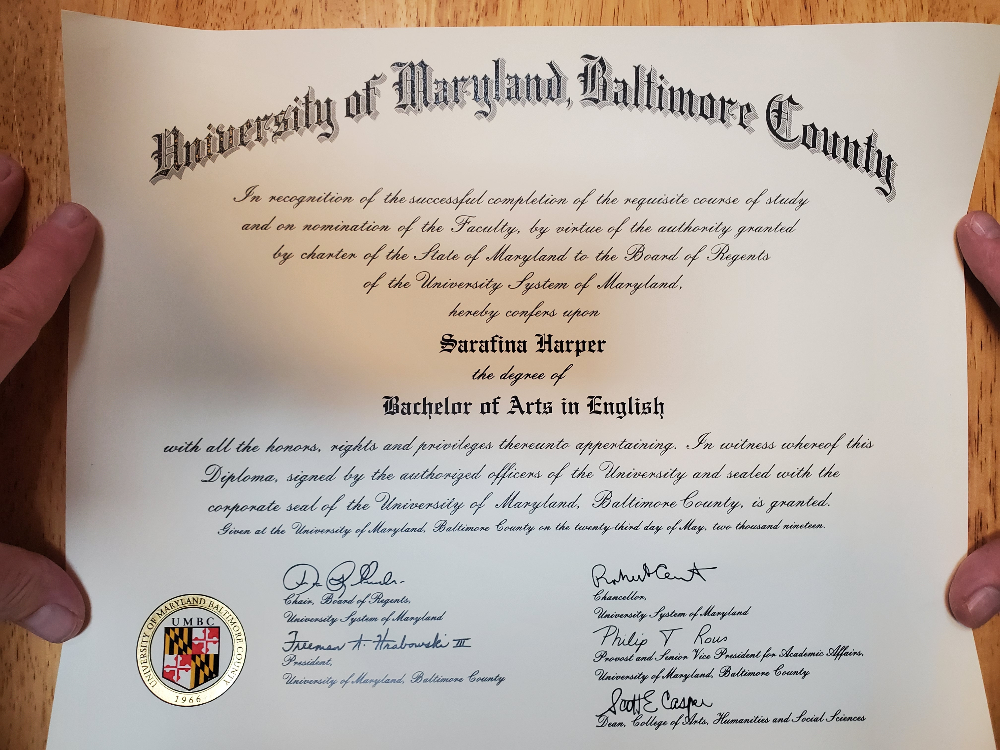

Sarafina Harper

Independent Journalist
Research & Development Coordinator
The Peace and Wellness Collective
January 2025 - Present
I identify strategies for investment and redevelopment to serve Baltimore City’s existing residents, and I document and archive local civic engagement efforts relating to public health.
Critical Reading Teacher
Baltimore County Public Schools
November 2023 - December 2025
I taught a data-driven literacy intervention program which enabled ninth grade students to elevate their reading level by 2+ grade levels per school year.
University of Maryland, Baltimore County
- B.A. English, concentration in Communications and Technology, 2019
- B.A. Anthropology, 2019
- Minor in Gender and Women’s Studies, 2019
Philip Merrill College of Journalism, University of Maryland, College Park
- Multimedia Graduate Certificate, Current Student
- Excelled in two capstone undergraduate courses, credits applied to English B.A. 2019
- Hard news writing and narrative writing
- Conducting interviews
- Videography and video editing with Adobe Premiere Pro
- Fact-checking using peer reviewed sources
- MPIA and FOIA requests to access information of public concern